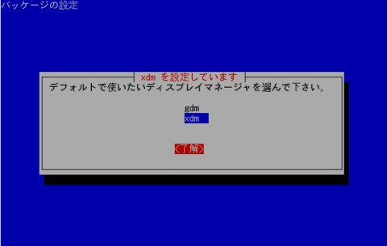

Debian GNU/Linux デスクトップ全般に共通するような FAQ & Tips を集めました。
■Debian LTS版（長期サポート版）に関することは、Debian-LTS
のページへ。
■Debian Live (Live CD)に関することは、DebianLive-FAQ
のページへ。
■Debian 11 (bullseye) （stable = 最新安定版）に関することは、Debian-bullseye のページへ。
■Debian 10 (buster) （oldstable = 旧安定版）に関することは、Debian-Buster のページへ。
■Debian 9 (stretch) （oldoldstable = 旧旧安定版）に関することは、Debian-Stretch のページへ。
■Debian 8 (jessie) （obsolete = 廃止）に関することは、Debian-Jessie のページへ。
■Debian 7.0 (wheezy) （廃止）に関することは、DebianWheezy-FAQ/tips
参照。
■Debian 6.0 (squeeze) （廃止）に関することは、DebianSqueeze-FAQ
参照。
■Debian 5.0 (lenny) （廃止）に関することは、DebianLenny-FAQ 参照。
■Debian 4.0 (etch) (廃止)に関することは、DebianEtch-FAQ 参照。
■Debian 3.1 (sarge) (廃止)に関することは、DebianSarge-FAQ
参照。
■Debian 3.0 (woody) (廃止)に関することは、DebianWoody-FAQ
参照。
組み込まれているソフトウェア・パッケージのすべてが、オープンソースなプロジェクトで開発され、あらゆるアーキテクチャーに対応する ように設計さ れた「ユニバーサル・オペレーティング・システム」が Debian です。
正式名として「GNU/Linux」が付けられているとおり、この Linux ディストリビューションは、再配布したり改変したりすることが自由に認められています。ここでいうフリーな(Free)ディストリビュー ションとは、無償 で入手でき、かつ再配布も自由なことをいいます。それが可能なのは、そうした行為を許可する GPL というライセンスに基づいて広く公開されているからです。
インターネットに接続し、デビアン・インストーラー (DI) で作業を行うことが一般的ですが、この環境を用意するのが難しい場合には、インストール用 DVD が入手可能です。
デスクトップ・メニューにある「ターミナル コンソール」より、次のコマンドを使ってアップデートが行えます。
# apt-get update …システムのデータベースを最新版へ更新
# apt-get upgrade …実際にアップデートを実行
# apt-get dist-upgrade …全パッケージのアップデートを実行
なお、Debian 8 (Jessie) 以降、apt-get は apt へ置き換えられました。下記のようにコマンドが変更となりますが、apt には補完機能があって apt-get も引き続き使用
できるように配慮されています。
# apt update (← apt-get update)
# apt upgrade (← apt-get upgrade)
# apt full-upgrade (← apt-get dist-upgrade)
インストール作業が完了したら、できるだけ早い機会にアップデートすることが大切です。アップデートの作業を随時行うことで、システム を最新の状態 に管理できます。
APT Update Watcher (apt-watch) は、Debian の安定版からは削除されました。開発版(sid)
にはあります。以下は、参考まで。
GNOME 環境では、大変便利なアップデートツールが用意されています。
# apt-get install apt-watch
インストール後、このアプレットをパネルに追加してください。
グラフィカルな操作で、Debianパッケージを個別にインストールします。ローカルに保存した debパッケージが適切にインストールできます。詳細はこちらのメモを参照。
deb http://www.debian-multimedia.org buster main
deb http://www.debian-multimedia.org bullseye main
snapshot.debian.net/archiveこの Debian アーカイブ・サイトは、2010年4月に登場しました。『このサービスによって、「時間を逆行」したり、パッケージの古いバージョンを見つけることが可能 になりました。snapshot.debian.org サービスは、たとえばパッケージのどのバージョンで前のバージョンになかった不具合が発生したかを特定するために、より正確に言えば、不具合が修正される までの期間中に古いバージョンを利用するために使えます。』としています。出典：https://debian-handbook.info/browse/ja-JP/stable/apt.html#sidebar.snapshot.debian.org
他のミラーサイトへと変更するには、次のコマンドを使用します。4.0 (Etch) では、この機能は含まれていません。
# apt-setup
表示されるメッセージに従って対話式に設定を行うので、/etc/apt/sources.list を直接書き換える必要が無くて便利です。
次のコマンドを実行し、メッセージにしたがって操作してください。
# apt-cdrom add
CD-ROM マウントポイント /cdrom/ を使用します
CD-ROM をアンマウントしています
ディスクを待っています ...
ディスクをドライブに入れて enter を押してください
CD-ROM をマウントしています ...
確認しています.. [e3429a10723e0fd78c2141817e8777aa-2]
ディスクのインデックスファイルを走査しています ..
2 のパッケージインデックス、0 のソースインデックス、0 の署名を見つけました
このディスクは以下のように呼ばれます:
'Debian GNU/Linux 4.0 r0 _Etch_ - Official i386 NETINST Binary-1 20070407-11:29'
Reading Package Indexes... 完了す ...
新しいソースリストを書き込んでいます
このディスクのソースリストのエントリ:
deb cdrom:[Debian GNU/Linux 4.0 r0 _Etch_ - Official i386 NETINST Binary-1 20070 407-11:29]/ etch contrib main
CD-ROM をアンマウントしています ...あなたの持っている CD セットの残り全部に、こ の手順を繰り返してください。
deb file:/home/hoge/deb ./
$ cd deb （または $ cd /tem/deb/ などとして移動。）
$ dpkg-scanpackages . /dev/null| gzip -9 > Packages.gz
# apt-get update以上で、作成した書庫が APT-line に追加されます。
これで、今後このフォルダにあるパッケージをインストールする場合、たとえ依存関係で不足するパッケージがあっても他のリポジトリを参 照し自動的に インストールしてくれるようになります。
パッケージのダウンロードだけを行う便利なコマンドがあります（以下実行例）。
# apt-get install flashplayer-mozilla -d
パッケージリストを読み込んでいます... 完了
依存関係ツリーを作成しています... 完了
以下のパッケージは「削除」されます:
flashplugin-nonfree
以下のパッケージが新たにインストールされます:
flashplayer-mozilla
アップグレード: 0 個、新規インストール: 1 個、削除: 1 個、保留: 0 個。
1013kB のアーカイブを取得する必要があります。
展開後に追加で 2130kB のディスク容量が消費されます。
続行しますか [Y/n]? y
取得:1 http://www.debian-multimedia.org etch/main flashplayer-mozilla 7.0.68.0-0.0 [1013kB]
1013kB を 11s で取得しました (86.7kB/s)
ダウンロードオンリーモードでパッケージのダウンロードが完了しました
最も一般的な方法は、インストール時に自動的に表示される tasksel という項目の中で「デスクトップ環境」を選択することです。GNOME、KDE、Xfce あるいは印刷サーバやデータベースなど、それぞれに必要なパッケージ一式をまとめてインストールしてくれます。
インストール時に Tasksel の項目を選択しなかった場合でも、インストール後、次のコマンドで追加インストールが実行できます。詳しくはDebianTasksを見てください。
# tasksel
テキストベースのインターフェース aptitude でも、Tasksel と同じように、それぞれの関連パッケージを一括インストールする機能があります。
# aptitude
関連項目 を参照してください。
普段グラフィカルログインで利用していて、一時的にテキストモードに切替えたいという場合は結構あり得ます。runlevel を恒久的に変更するには起動時の設定ファイルを書き換える必要があります。一時的にテキストモードを使用する際には、次の TIPS のとおり操作してください。
『ディ スプレイマネージャからコンソールに一時的に戻すことはできますか』
「xdm の場合には、Ctrl+r を押すとコンソールになります。また、xdm を含めてその他のディスプレイマネージャでは、Ctrl+Alt+F1〜F6 を押すと、それぞれの仮想コンソールを開きます。元に戻すには Ctrl+Alt+F7 を押します。」
こちらで確認したところ、Debian 3.1 (sarge) では gdm (GNOME Display Manager) の場合も、Ctrl + Alt + F1〜F6 キーでテキストモードに切り替わります。ただし、バックグランドでは既にディスプレイマネージャが起動しているようなので、startx コマンドは使えません。グラフィカルログインに切替える場合は、必ず Ctrl + Alt + F7 キーで元に戻る必要があります。
ユーザーはグラフィカルログイン時、直接シャットダウンさせることはできません。
Debian では Fedora や Red Hat Linux の場合と勝手が違って、グラフィカルログイン時(例えばGNOME
環境での運用時)には、ユーザーが直接シャットダウンできない仕組みを採用しています。これはセキュリティ確保のためと考えられます。
具体的には、一度ログオフし、ディスプレイマネージャー (xdm: X Display Manager) から今度は root
ログインした後で「シャットダウン」の項目が選択できるようになります。
ただし、ディスプレイマネージャーに gdm (GNOME Display Mamnager) を使用した場合には、ログイン画面で
root 権限のシャットダウンが可能となるので、この方が実際便利でしょう。「GNOME デスクトップマネージャ」のメニューから
アクション ＞ 停止 の項目を選択してシャットダウンさせます。
gdm (GNOME Display
Manager)は、Debian
の標準的なログイン・マネージャーです。gdmはその設定・変更が容易に行えるという特徴があります。
gdm-themes という Debパッケージをインストールします。
#apt-get install gdm-themes
ログイン画面の設定変更は、デスクトップ ＞ システム管理 ＞ ログイン画面 より行えます。
xdm (XDM: X Window Display Manager)は、軽快に動作する、シンプルなディスプレイ・マネージャーです。
# apt-get install xdm
次のいづれかのコマンドを実行すれば、デフォルトのディスプレイマネージャーを交互に変更可能です。
# dpkg-reconfigure gdm
あるいは
# dpkg-reconfigure xdm

# apt-get remove xdm
K デスクトップ環境では、 KDM を使うことを推奨します。
# apt-get install kdm
4.0 Etch のインストーラーを使って、標準の言語に「日本語」を選択すると、ログイン画面は日本語になります。この場合、システムレベルの言語も日 本語に設定されま す。
標準の言語で「なし」を選択すると、システムレベルの言語が英語となってしまい、ログイン画面も英語で表示されます。したがって、ログ イン画面を日本語で表示させるためには、次のコマンドで言語の再設定を実行し、日本語（Ja_JP.UTF-8）を選択する必要があります。
# dpkg-reconfigure locales
GNOME 1.4 ユーザガイド(日本語訳) が日本 GNOME ユーザー会のサイトにあります。解説の対象となっているバージョンが古いですが、基本的な操作を理解するには十分参考になります。
GNOME とは正式には GNU Network Object Model Environment と呼ばれ、X Window System においてウインドゥマネージャーと共に利用され、ユーザーの使い勝手を向上させてくれる一連のアプリケーションやデスクトップ・ツールの ことを指していま す。
Windows 標準では、アイコンの「ダブルクリック」でファイルが開きます。一方、Linux の場合、GNOME 環境ではダブルクリック、KDE 環境ではシングルクリックが一般的な初期設定のようです。
GNOME 環境でシングルクリックへと設定変更するには、デスクトップの「ここからスタート」または「ホームのアイコン」 ＞ デスクトップの設定 ＞ ファイル管理 ＞ 「動作」タブ ＞ 「シングル・クリックでアイテムを起動する」 にチェックを入れてください。
タスクバー上でマウスの右ボタンをクリックします。追加できるメニューが表示されるので、任意のアプリケーションを選択します。
タスクバー上でマウスの右ボタンをクリックし、プロパティから サイズの項目で設定を変更します。初期設定では、サイズが24ピクセルになっています。この数字を36くらいにすると Red Hat 9、Fedora Core Linux で採用されている GNOME とほぼ同じ見栄えになるでしょう。
公式な日本語版が見当たらないようなので、どうしてもという方は英語版の Users' Guide を読んでください。もっとも、KDE の日本語ヘルプには操作方法があります。
Xfce デスクトップ環境での利用については、Desktop/XfceDesktop に詳しい説明があります。
コマンドライン（端末）から、mozilla-locale-ja を追加インストールします。
# apt-get install mozilla-locale-ja
以下のパッケージが新たにインストールされます:
mozilla-locale-ja
無 線LAN動作状況 というページ(外部リンク)があります。
BUFFALO (メルコ) WLI-PCM-L11GP については、当方でも自動認識され問題なく利用できることを確認しています。
コンピュータ内蔵の時計はかなり不正確ですが、インターネット上のタイムサーバーと同期させると非常に正確になります。ntp をインストールしておきます。
# apt-get install ntp
[過去の情報]
Debian 3.1 以前では、ntp-simple をインストールしておきます。
# apt-get install ntp-simple
以下の特別パッケージがインストールされます:
ntp-server
提案パッケージ:
ntpdate ntp-doc
以下のパッケージが新たにインストールされます:
ntp-server ntp-simple
アップグレード: 0 個、新規インストール: 2 個、削除: 0 個、保留: 0 個
151kB 中 0B のアーカイブを取得する必要があります。
展開後に追加で 455kB のディスク容量が消費されます。
続行しますか? [Y/n]y
未選択パッケージ ntp-simple を選択しています。
(データベースを読み込んでいます... 現在 51198 個のファイルとディレクトリがインストールされています。)
(.../ntp-simple_1%3a4.2.0a-11_i386.deb から) ntp-simple
を展開しています...
未選択パッケージ ntp-server を選択しています。
(.../ntp-server_1%3a4.2.0a-11_i386.deb から) ntp-server
を展開しています...
Removing any system startup links for /etc/init.d/ntp-simple ...
Removing any system startup links for /etc/init.d/ntp-refclock
...
Removing any system startup links for /etc/init.d/ntp ...
ntpd: no process killed
ntp-simple (4.2.0a-11) を設定しています ...
ntp-server (4.2.0a-11) を設定しています ...
Starting NTP server: ntpd.
NTP server
が起動すれば、デスクトップのパネルにある時計アイコンをマウスで右クリックし、「日付と時刻の調整」から時刻をネットワークサーバーと
同期できます。
必要な印刷関連のパッケージをインストールします。インストールの方法は複数あります。
[APT を使ってインストールする方法]
この方法で行うと、必要なパッケージを個別に取捨選択してインストールすることが可能です。
# apt-get install a2ps a2ps-perl-ja cupsys
cupsys-driver-gimpprint cupsys-bsd
foomatic-bin foomatic-db-gimp-print foomatic-filters-ppds
gimpprint-locales
gnome-cups-manager
以下の特別パッケージがインストールされます:
cupsys-client cupsys-driver-gimpprint-data emacsen-common
foomatic-db
foomatic-db-engine foomatic-db-hpijs foomatic-filters gs-esp
hpijs ijsgimpprint
libcupsimage2 libgnomecups1.0-1 libgnomecupsui1.0-1 libijs-0.35
libslp1 patch
提案パッケージ:
emacs21-nox emacsen groff gv html2ps imagemagick tetex-bin
t1-cyrillic
xpdf-korean xpdf-japanese xpdf-chinese-traditional
xpdf-chinese-simplified
kdeprint gtklp cupsys-pt xpp gimpprint-doc foo2zjs foomatic-gui
hpoj slpd openslp-doc
推奨パッケージ:
psutils wdiff smbclient xpdf-common netcat psfontmgr
以下のパッケージが新たにインストールされます:
a2ps a2ps-perl-ja cupsys cupsys-bsd cupsys-client
cupsys-driver-gimpprint
cupsys-driver-gimpprint-data emacsen-common foomatic-bin
foomatic-db
foomatic-db-engine foomatic-db-gimp-print foomatic-db-hpijs
foomatic-filters
foomatic-filters-ppds gimpprint-locales gnome-cups-manager
gs-esp hpijs
ijsgimpprint libcupsimage2 libgnomecups1.0-1 libgnomecupsui1.0-1
libijs-0.35 libslp1 patch
[Tasksel を使ってインストールする方法]
印刷サーバ関連パッケージを一括して追加インストールできるため、どのようなパッケージを選択すべきか良く分からない時には簡易で便利な
方法です。
次のコマンドを実行し、印刷サーバを選択します。
# tasksel
ただし、使っているシステムに必要な印刷関連パッケージがこの中に含まれていない場合には、APT で追加してください。
[Aptitude を使ってインストールする方法]
Tasksel を使ってインストール場合と似ていますが、画面上の操作手順が異なります。
# aptitude
矢印キーと Enter キーを使って [タスク] > [Servers] > [印刷サーバー] の順に選択実行します。
Tasksel / Aptitude では、次の印刷関連パッケージがセットになっています。
cupsys
cupsys-bsd
cupsys-client
cupsys-driver-gimpprint
foomatic-db-engine
foomatic-db-hpijs
foomatic-filters-ppds
インストールが完了したら、プリンターの初期設定を行います。印刷の設定は、WEB ブラウザーから アドレス http://localhost:631/ を開いて行えます(推奨の設定方法)。他に、デスクトップから gnome-cups-manager や Foomatic-GUI を起動させて設定する方法などもあります。
Mozilla ブラウザーで印刷した時の日本語の文字化け□□□を防ぐためには、さらに次のパッケージを追加します。
cmap-adobe-japan1 gs-cjk-resource psfontmgr
(※cmap-adobe-japan1 gs-cjk-resource は non-free にあります。)
alien というパッケージを使えば、RPM、Deb さらに Tar ３種類間の相互変換が可能です。
Debian で運用する場合には、alien は、LSB, Red Hat, Stampede, Slackware パッケージを Debian パッケージに変換し、dpkg を使ってインストールできるようにしてくれます。このツールは、バイナリパッケージにのみ対応しています。公式サイトにその詳しい解説が あります。
上記で紹介した通常のインストール手順では、開発環境を含んでいません。したがって、ソースからビルド（＝コンパイル）することができませ ん。開発環境を追加してください。基本的な開発環境は、こちらを参考に build-essential をインストールすれば整います。 なお、hoge という名前のものをインストールするには、次のコマンドで以下のように関連するもの一式を追加します。
# apt-get install build-essential devscripts
# apt-get build-dep hoge
なお、auto-apt というパッケージを利用して、開発環境を自動的に追加することもできます。
# apt-get install auto-apt
パッケージ: auto-apt (0.3.21) -
ファイルによるパッケージ検索およびオンデマンドパッケージインストールツール
「auto-apt
は、その環境内で起動中のプログラムのファイルアクセスを監視し、プログラムが、インストールしていないパッケージに属することが知られ
ているファイルに アクセスしようとしている場合、auto-apt はそのパッケージを apt-get
によりインストールします。」- http://packages.debian.org/etch/auto-apt
以下は、hoge-1.2.3.tar.gz というソース・パッケージから .deb形式のバイナリー・パッケージを作成する手順です。
# apt-get install checkinstall
$ tar xvfz hoge-1.2.3.tar.gz
$ cd hoge-1.2.3
$ ./configure
$ make
# checkinstall
以下は、hoge-1.2.3.tar.gz というソース・パッケージから .deb形式のバイナリー・パッケージを作成するための最小限の手順です。CheckInstall? という簡易な方法とは異なり、正式にパッケージを作成します。
# apt-get install build-essential devscripts dh-make linda fakeroot
$ tar xvfz hoge-1.2.3.tar.gz
$ cd hoge-1.2.3
$ dh_make
$ debuild
[参照先]
次期リリース候補としてテスト中の段階にある Debian ディストリビューションは、一般にテスト版(Testing)と呼ばれています。このテスト版は、安定版ほど十分な検証が行われていませ んが、「リリー ス・クリティカル」なバグは含まれないものとされます（実際には不安定版ほどではありませんが、バグを含んでいます）。ただ、パッケージ のアップデートや アップグレードが頻繁にリリースされる関係で、ある日突然不具合が生じソフトウェアが正常に起動しなくなるということも珍しくありませ ん。
セキュリティ・アップデートについては、安定版のような迅速な対応を受けることができない点にも注意してください。
リリース-クリティカル・バグ (Release-Critical bugs) とは、運用上重大な支障を与えるような不具合を指しています。どの Debian パッケージにどんな不具合が含まれているのかは、バグ追跡システム (bug tracking system: BTS) で集計し管理されています。検索すれば、その詳細を知ることが可能です。
次のウェブサイトから、購読の申し込みができます：
http://www.debian.org/MailingLists/subscribe
ユーザーに広く利用されているリストです。
日本語一般に関するリストもあります。
次のマニュアルが用意されているので、活用してください。
* Debian GNU/Linux FAQ
* Debian インストールマニュアル
* Debian リリースノート
* Debian リファレンス
* APT-HOWTO
* 初心者むけの dselect 文書
* ユーザーズガイド (Progeny から)
* Debian Linux ユーザーズガイド
* Debian GNU/Linux におけるユーロのサポート
* Debian GNU/Linux and Java FAQ
* Debian セキュリティマニュアル
* Linux クックブック
これらのマニュアルは、こちらから入手できます：https://www.debian.org/doc/index.ja.html
APT コマンド全般の詳細な解説。（本文は日本語）
apt-howto のインストール方法と閲覧
# apt-get install apt-howto-ja
インストール後、file:///usr/share/doc/Debian/apt-howto/apt- howto.ja.html をブラウザで開く。
README FOR apt-howto
This package holds one of the works of the Debian-BR Project.
This manual was firstly written in Portuguese and then
translated into English with Steve Langasek <vorlon@debian.org>'s
help.
All the files are put in the directory:
/usr/share/doc/Debian/apt-howto
The Debian-BR Project: http://www.debian-br.org
# apt-get install apt-dpkg-ref
インストール後、file:///usr/share/doc/apt-dpkg-ref/apt-dpkg-ref.html をブラウザで開く。
http://desktop.good-day.net/
より LinuxプリインストールPCが販売されています。
詳しくは http://desktop.good-day.net/news/shop/start.html
を見てください。
debian プロジェクトでは現在、「Debian Hurd」の実現に向けて取組みが行われています。今の Linux kernel に基づくシステムは、近い将来 Debian GNU/Hurd に置き換えられることになります。予備知識として知っておいても良いでしょう。
「GNU/HurdとはGNU/Linuxと置き換えるために設計された新しいコンピュータオペレー ティングシステムのことです。GNU/Hurdは The Free Software Foundation (GNU)と Software in the Public Interest, Inc. (Debian)によって形づくられ、守られているfree softwareの主義を忠実に守るものです。HurdはLinuxカーネルと置き換わるでしょう。また、GNU/Hurdオペレーティ ングシステムは GNU/Linuxを構成しているGNU toolを利用することができるでしょう。」(上記サイトより一部引用)
Debian GNU/Linux スレッドテンプレ が大変役立ちます。リンク切れの場合は ウェブアーカイブからも利用できます。
最新スレッドは、2ch Linux板から 検索してくだ さい。
http://kmuto.jp/debian/debian_sarge/ 参照。
書籍「Debian GNU/Linux 徹底入門」 で紹介している Debian に関するよくある質問と回答がデータベースにまとめられていて、オンラインで利用できます。検索も可能です。